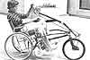
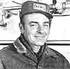

University of Washington mechanical engineering students John Greenlaw, Craig Pfarr, and Dan Reukert have developed a wheelchair attachment that permits its user to propel his or her vehicle at speeds up to 15 MPH. The device consists of a large wheel and shaft that-when in use-serve to hold the two small front rollers of a conventional chair off the ground . . . turning the machine into a three-speed, hand-powered tricycle with front-wheel drive. The apparatus can be easily removed and parked in a bicycle rack, allowing the wheelchair operator to enter buildings where the higher speed conversion would not be admitted.
The prototype-which was designed by Greenlaw, Pfarr, and Reukert in the spring of 1979 as their senior project for the University's Departments of Medicine ( Division of Research and Training) and Mechanical Engineering-has been presented to various manufacturers, and negotiations for commercial development are currently underway.-JV.
MARY HEATHER AND JOSEPH GUERRIERI: JILTED GENERATOR
Some five years ago, 76-year-old Mary Heather and her 71-year-old brother Joseph Guerrieri (who's an electrical engineer) discovered that the officials of their hometown of Stockbridge, Massachusetts were planning to destroy an abandoned hydroelectric plant that dated back to 1906. The forsaken energy producer-which provided three villages with power prior to World War II-had been shut down in 1947 . . . when oil was plentiful and inexpensive.
But Joseph and Mary had faith that the unit could be restored to its former condition, so they lobbied for the right to purchase the plant . . . and-in August 1977-acquired the property for an investment of $5,000. The dedicated duo promptly set to work cleaning the powerhouse and searching for parts and equipment with which to make repairs . . . inspired by the knowledge that the plant-when completed-would have an estimated electrical capacity of 500 KW. "That's enough energy," Mary says, "to power about 250 average-sized residences!- Ronald and Marcia Trahan.
GREGORY MACDONALD: BARK + SEWAGE = FERTILIZER
In the mid 1960's, New Hampshire's Water Pollution Control Agency directed the inhabitants of the town of North Stratford to stop emptying their toilets and bathtubs into streams that poured into the Connecticut River. The alternative-as presented by the agency-was the construction of a sewage plant, the estimated cost of which was more than a million dollars . . . a figure that would generate a tax increase of from 17 to 35%.
North Stratford resident Gregory MacDonald had another idea, however. He'd noted that the town's sawmills were burning 40 tons of bark a day . . . and Greg had the notion that the woodwaste could, if combined with the city's sewage, be returned to the land to produce better crops. As a result, Gregory submitted a number of grant proposals and-in May 1971was awarded $30,600 from the Environmental Protection Agency to test his plan.
MacDonald's project proved to be both technically and economically sound, but that was not enough to assure its continuation. "It's an unfortunate fact," says Gregory, "that federal law allows the expenditure of virtually unlimited funds for nonproductive purposes, while requiring that productive uses of waste-or of people-be not only self-supporting but self-capitalizing!"-JV.
DELBERT BANOWETZ: BOOTLEGGING DAIRYMAN
Delbert Banowetz turned himself over to the Jackson County sheriff after a mid January sentencing that condemned him to a 30-day term in jail: The Hawkeye Stater had been convicted of contempt of a 1976 injunction forbidding him to sell un pasteurized milk.
Thirty-one states in the U.S. currently recognize that raw milk is consumed, and have set lip standards to protect the public . . . however, Iowa law permits the sale of pasteurized dairy products only. "When milk undergoes the bacteria-killing process," says Banowetz, "enzymes are destroyed, proteins are denatured, the food's vitamin content is lowered, and the end product becomes harder to digest. Pasteurization does wipe out disease-producing micro-organisms, but it makes more sense to me to try to prevent bacterial growth in the first place."
Unfortunately, however, raw-milk advocates-opposed by the large creameries-have been unsuccessful in their attempts to pass a bill that would provide for regulation of natural dairy products. Delbert-who chose to serve his sentence rather than file for an appeal-hopes that the publicity surrounding his case will aid fellow lobbyists in their battle with state lawmakers.- HarveyRickert.
IN BRIEF . . .
RICHARD WHITE was summoned to Boston Housing Court-in November of last year-for removing his electric meter. But White (who has no phone and eats only uncooked food, bought fresh every day) emerged from the courtroom smiling: The city's Housing Inspection Department, upon discovering that it was lawful to refuse electric power, had withdrawn its case.
"Solar transportation is no longer 50 years down the road," claims native Floridian JEFF DUNAN . . . who has developed a sun-fueled motorcycle which he hopes to market soon. During the daytime, photovoltaic solar energy cells produce the electricity that powers the "Solar Cycle", and a storage battery allows up to 60 miles of nighttime travel.
Seventy-year-old HAROLD R. HAY (featured in MOTHER's Plowboy Interview, issue 41) has discovered two new uses for the waterbed: heating and cooling houses. Specially designed waterbeds (called Thermoponds) are covered with a framework of retractable insulation panels that expose the "roof pools" in the daytime (to receive sunlight to warm the house), or at night ( to cool the dwelling by releasing heat absorbed through windows, doors, and walls).
In 1972 PETER PAUL PRIER founded the only violin-making school in the U.S., in an effort to preserve a dying art. Prier acknowledges that there are a number of violin manufacturers in the country. "But," says the Salt Lake City, Utah resident, "no musician of any value wants a factory-made instrument."
Weed growth has been hampering the recreational use of New York's Cayuta Lake . . . but JAMES W. ALLEN has turned the problem into profit. Allen-who owns and operates Lake Grove Park (on Cayuta's shoreline)-has been harvesting the plants (which have most of the nutrients found in hay) and is selling them as garden mulch.-JV.
|
|
 |
 |